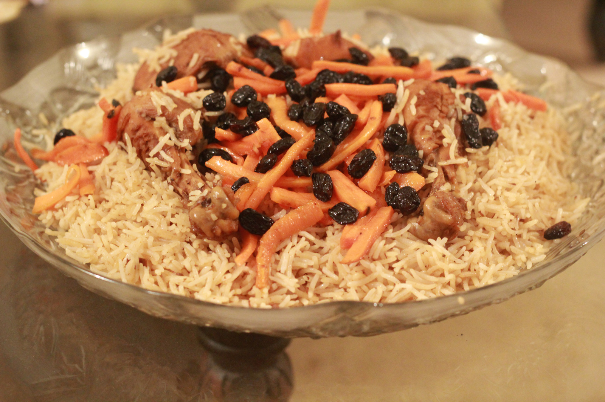

Qabuli Polao

Description
Qabuli Polao is a variety of pilaf made in Afghanistan, Tajikistan and Uzbekistan. The core ingredients are steamed rice mixed with caramelized carrots and raisins as well as marinated lamb meat. Qabuli Polao is commonly garnished with almonds and pistachios.
ingredients
- 1 onion, peeled and halved
- 1 whole head garlic, loose skins removed
- 1 cinnamon stick
- 4 cardamom pods, crushed
- 1 teaspoon ground black pepper
- 1 teaspoon cumin seed
- 1 teaspoon salt
- 1 teaspoon white sugar
- 1 teaspoon paprika
- 1 teaspoon coriander seeds
- 4 whole cloves
- 3 ½ cups water, or as needed to cover
- 2 cups sella basmati rice
- 1 tablespoon canola oil
- 1 onion, chopped
- 3 cloves garlic, minced
- 1 cup matchstick carrots
- ½ cup raisins
- ½ cup slivered almonds
- 1 teaspoon cumin seed
- 1 teaspoon ground black pepper
- 1 cardamom pod, shell removed and seeds crushed into a powder
- 1 whole clove
Steps
- Make the broth: Place halved onion, garlic head, cinnamon stick, cardamom pods, pepper, cumin seed, salt, sugar, paprika, coriander seeds, and cloves into a pressure cooker. Pour in water to cover.
- Close the cooker securely and place the pressure regulator over the vent according to manufacturer's instructions. Set to high and heat until steam escapes in a steady flow and makes a whistling sound, about 5 minutes. Reduce to medium and cook for 20 minutes. Let the pressure release naturally, about 10 minutes. Unlock the lid and remove.
- When the broth is almost finished, start the rice: Soak rice in cool water for 5 minutes, then rinse until water runs clear.
- Strain cooled broth into a bowl. Clean out the pressure cooker, then place over medium heat and add oil.
- Add onion and garlic to the cooker; cook and stir until softened and browned, 7 to 10 minutes. Stir in carrots and cook until soft, about 3 minutes more. Add strained rice, raisins, almonds, cumin seed, pepper, cardamom powder, and clove. Stir to combine, then pour in enough broth to cover.
- Close the cooker securely and seal the vent; set to high and heat until the first whistle, 5 to 7 minutes. Reduce to medium and cook for 5 minutes. Remove from the heat and let rest for 7 minutes, then let pressure release naturally, about 10 minutes. Immediately transfer cooked rice to a serving dish to prevent overcooking.